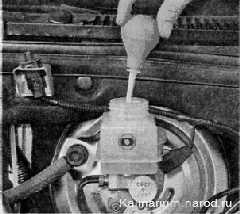

Замена тормозной жидкостиДля выполнения работы потребуется помощник, а также резиновая груша. Последовательность выполнения 1. Подготавливаем автомобиль и необходимое оборудование к выполнению работы. 2. Снимаем крышку бачка. Во избежание попадания воздуха в гидравлический привод тормозной системы во время замены тормозной жидкости следим за тем, чтобы ее уровень в бачке не опускался ниже отметки MIN. 3. Грушей отбираем рабочую жидкость из бачка главного тормозного цилиндра. 4. Заливаем в бачок новую жидкость до верхней кромки бачка. 5. Прокачиваем контуры системы гидропривода, начиная с задних колес автомобиля. 6. Прокачку каждого колесного цилиндра проводим до начала выхода новой (более светлой) тормозной жидкости из штуцера. 7. После замены жидкости в обоих контурах проверяем работу гидропривода и доводим до нормы уровень жидкости в бачке главного тормозного цилиндра. |